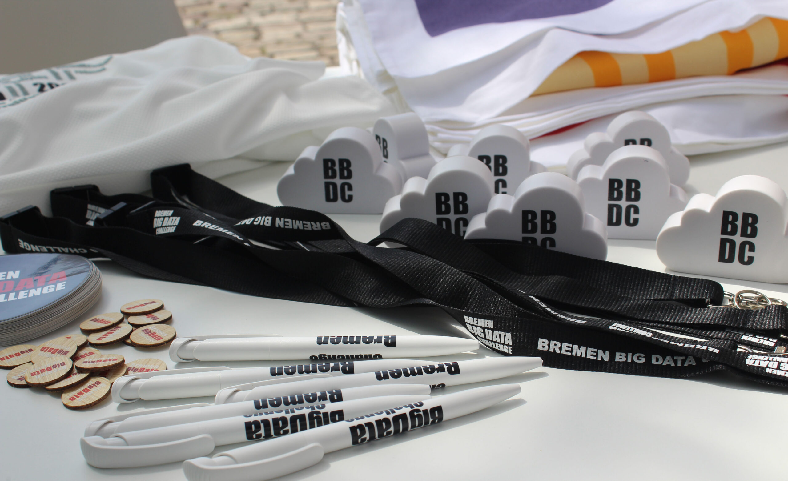
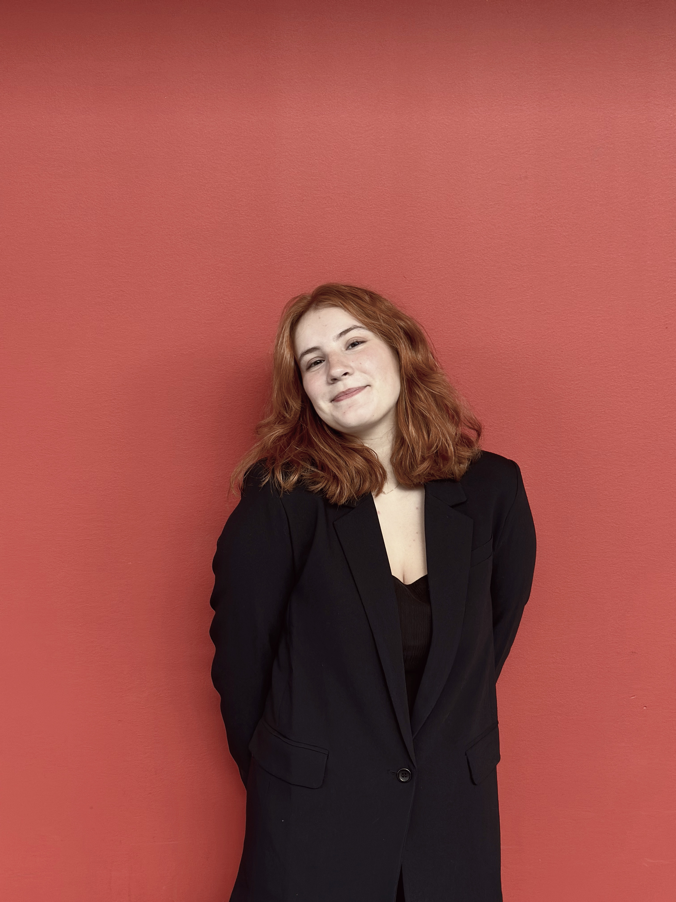
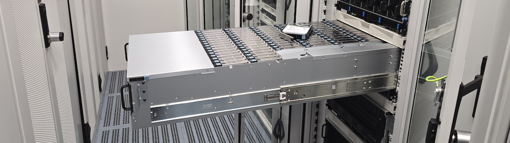
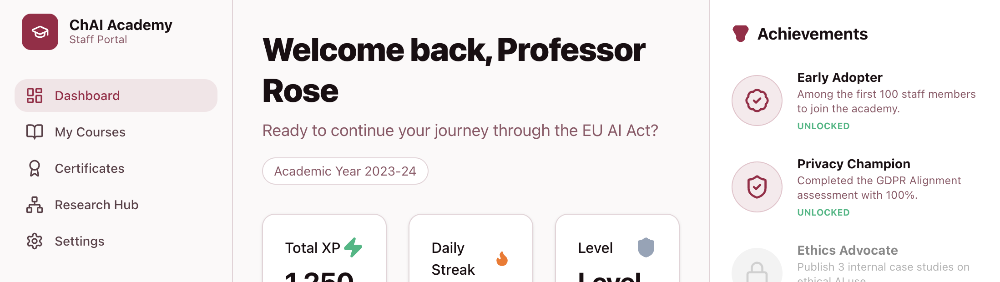

Bremen Big Data Challenge
Redesign of the Bremen Big Data Challenge, including a new website, updated visual identity, and internal organization.
UX Designer & Researcher
A UX/UI Designer and Researcher focused on human-centered technology and accessible digital experiences. With a background in Computing and Digital Media, I explore how people interact w[...]

Selected Work

Redesign of the Bremen Big Data Challenge, including a new website, updated visual identity, and internal organization.
Research focused on how university students with dyslexia use generative AI to support their studies.

Development of BioHub's visual identity and website, establishing a cohesive brand from the ground up.

Designing a user-centered learning platform to support responsible AI use in higher education.
I've always been curious about why people do the things they do, which is what led me to user research. I enjoy talking with people, learning about their experiences, and understanding the[...]
I earned my Bachelor's degree in Computing and Information Studies with an emphasis in Interaction Design from Washington & Jefferson College, and I'm currently completing my Master's thes[...]
I enjoy turning conversations and insights into thoughtful, human-centered design decisions that help make technology more meaningful and accessible for everyone.
Every design decision earns its place through evidence.
Looking at parts and wholes, near-term and long.
Co-design with teams and users, never just for them.
Inclusive design from the start, not as an afterthought.
I start by understanding the people I'm designing for. I conduct interviews with users and stakeholders from different backgrounds and perspectives to gain a well-rounded understanding [...] Methods
Once the research is complete, I organize what I've learned. I analyze interview data, identify recurring themes, and map them out. This process helps transform information into a clear[...] Methods
With a clearer understanding of the problem space, I begin exploring solutions. I start with rough sketches and low-fidelity concepts before moving into prototypes, often using Figma. I[...] Methods
In the final stage, I prepare everything needed for implementation and future growth. I provide finalized designs alongside clear documentation, design systems, and detailed explanation[...] Methods